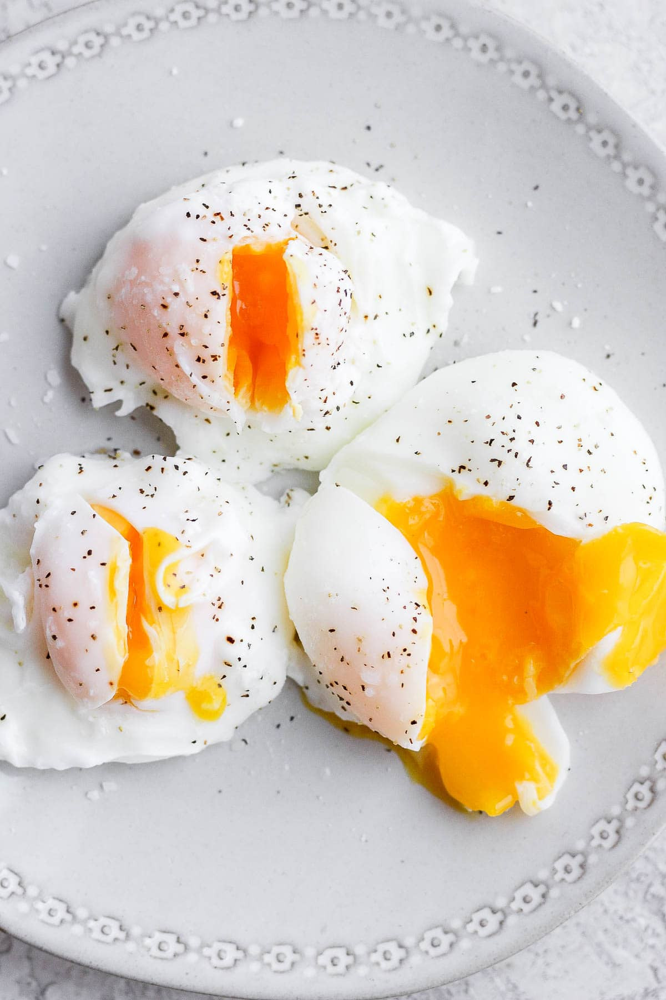

Poached Eggs

How to poach an egg
Poached eggs are one of the best ways for anyone to enjoy this delicious dish. Able to be cooked in a short period of time this dish is one of my favorites and one I would recommend to anyone to enjoy.
- Boil a medium pot of water.
- Add a table spoon of white vineger.
- Crack an egg into a strainer over a ramiken.
- Once water is boiling, swirl the water into a whirl.
- Slide egg into the water.
- Cook for three minutes.
- Remove the egg with a slotted spoon.
- Pat drive with a paper towel.
Back Home